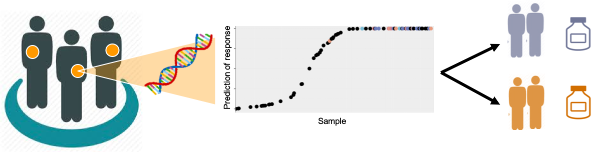

Research
Evolutionary trajectories of structural variation in cancer
We use statistical genomics to investigate the evolution of structural variants in tumours to inform patient stratification, better predict treatment response and improve clinical outcome. A major source of variation between tumours is the timing and sequence of structural variant (SV) accumulation throughout tumour progression. The SV landscape, in tumours with highly rearranged genomes, can stratify patients according to disease progression, treatment response and prognosis. Interrogating complex tumour genomes is computationally challenging and modelling SV evolution requires statistical methodology.

Optimising targeting of treatment to patients with tumours with DNA repair deficiency
Homologous recombination deficiency (HRD) is a vulnerability in some tumour’s ability to repair their DNA, which can be targeted effectively, leading to improved patient survival. Predicting the presence of HRD in tumours accurately and in a way that can be applied to samples collected in a clinical setting is a problem of utmost importance in order to determine which patients will benefit from treatment. Our recent work has revealed that structural variants at BRCA1/2 may have an important and unappreciated role in HRD across tumour types, a finding that is currently being experimentally validated.